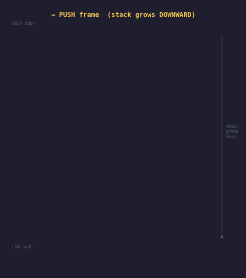
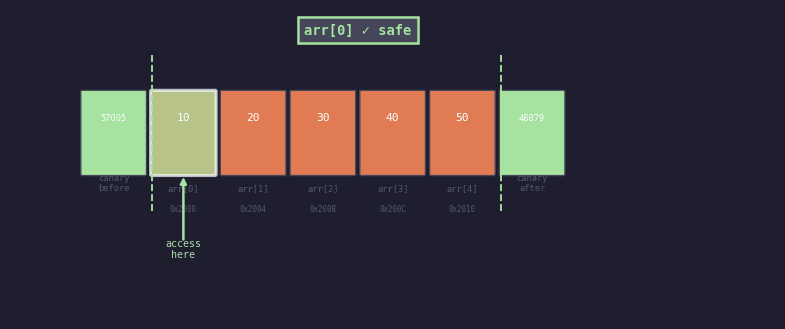
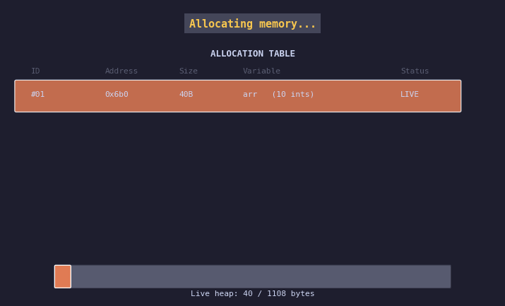

Part 1 built the foundation. Part 2 went into heap mechanics. This final part covers three concepts that protect you: understanding the call stack so you can avoid stack overflows, understanding buffer bounds so you don't silently corrupt memory, and building your own memory leak detector using macros so you always know what you've allocated and what you've forgotten to free.
Program 8 — Recursive Call Stack Frames
Every time a function is called, the CPU pushes a stack frame onto the stack. This frame holds the function's local variables, its return address (where to jump back to when it returns), and saved register values. When the function returns, the frame is popped and all that memory is instantly reclaimed.

Each call to factorial() pushes a new frame downward (lower address). The yellow frame is the current active one. On the way back up, frames are popped — the stack shrinks as each function returns its result.
#include <stdio.h>
// Track where the stack started so we can measure depth
static void *stack_base = NULL;
long factorial(int n) {
int local_n = n; // this local variable lives on THIS frame
// Print the frame address — watch it decrease (stack grows downward)
if (!stack_base) stack_base = (void*)&local_n;
long depth = (long)stack_base - (long)&local_n;
printf("factorial(%d) &local_n=%p depth=%ld bytes\n",
n, (void*)&local_n, depth);
if (n <= 1) return 1;
return (long)local_n * factorial(n - 1);
// Each recursive call adds another frame ~below~ this one
}
int main() {
stack_base = (void*)&stack_base;
printf("Result: %ld\n", factorial(5));
return 0;
// When factorial(1) returns, all 5 frames are popped in reverse
}
Run this and watch the addresses. Each recursive call produces a lower address
for &local_n — the stack genuinely grows downward in memory.
You can measure exactly how many bytes each frame consumes.
The anatomy of a stack frame:
- Return address — where the CPU jumps back to after
return - Saved registers — the caller's register state, preserved so it can resume
- Parameters — function arguments passed by value
- Local variables — all
int x = 5;declarations inside the function
The stack frame is created in a single CPU instruction (PUSH rbp / SUB rsp, N) and destroyed in another (POP rbp / RET). That's why local variable allocation is "free" — it's just a register decrement.
int *bad() { int x = 5; return &x; } — when bad() returns,
the frame is gone. The pointer now points to garbage (or the next function's frame).
This is undefined behaviour and causes the most baffling bugs.
Program 9 — Array Bounds & Safe Buffer
C has no runtime bounds checking. When you write arr[10] on an
array of size 5, the compiler does not stop you. It generates the pointer
arithmetic, reads or writes whatever is at that address, and moves on. The
result might be a crash, silent data corruption, or — in security contexts —
an exploitable vulnerability.

Green accesses (arr[0], arr[2], arr[4]) are within bounds — safe. Red accesses show out-of-bounds indices overwriting the canary values placed next to the array. arr[100] would hit random memory or cause a segfault.
#include <stdio.h>
#include <stdlib.h>
// ---- Safe Buffer: a struct that wraps an array with bounds checking ----
typedef struct {
int *data;
int capacity;
int size;
} SafeBuffer;
int sb_set(SafeBuffer *sb, int index, int value) {
if (index < 0 || index >= sb->capacity) {
printf("BOUNDS ERROR: index %d out of [0, %d)\n", index, sb->capacity);
return 0; // failure
}
sb->data[index] = value;
return 1;
}
int main() {
// Unsafe: raw array — no protection
int arr[5] = {10, 20, 30, 40, 50};
int canary = 0xDEAD; // placed right after arr on the stack
printf("arr[4] = %d (safe)\n", arr[4]); // fine
// arr[5] would read/write canary — silent corruption
// arr[-1] would read/write whatever is below arr on the stack
// arr[100] would crash (or worse, corrupt something important)
printf("canary before any OOB: 0x%X\n", canary);
// Safe: wrapped buffer with bounds check
SafeBuffer sb;
sb.data = (int *)malloc(5 * sizeof(int));
sb.capacity = 5;
sb.size = 0;
sb_set(&sb, 0, 100); // OK
sb_set(&sb, 4, 500); // OK
sb_set(&sb, 5, 999); // BOUNDS ERROR caught and reported, not executed
sb_set(&sb, -1, 999); // BOUNDS ERROR caught
free(sb.data);
return 0;
}if (idx < N) { arr[idx] = ...; }. Without
this guard, out-of-bounds GPU writes corrupt device memory silently — no
segfault, just wrong results.
How to catch bounds errors automatically in development:
AddressSanitizer (fastest, catches most bugs):
gcc -fsanitize=address -g your_file.c && ./a.out
Valgrind (thorough, slower, also catches leaks):
valgrind --track-origins=yes ./a.out
UBSan (undefined behaviour sanitizer):
gcc -fsanitize=undefined -g your_file.c
Program 10 — malloc/free Tracker: Build Your Own Leak Detector
A memory leak is when you malloc() memory and never
free() it. The program keeps running, the memory is never returned
to the OS, and over time the process eats all available RAM. Long-running servers
(and GPU inference workers) die from memory leaks.
Instead of using an external tool, we can build our own tracker using a classic C technique: macros that intercept every malloc and free call and log them to a table. At program end, any entry that was never freed is a leak.

Each MALLOC call adds a row to the table marked LIVE. FREE calls flip the status to FREE. At program end, any row still marked LIVE is reported as a leak — including the exact source line where it was allocated.
#include <stdio.h>
#include <stdlib.h>
// --- The tracking table ---
typedef struct {
void *ptr;
size_t size;
int line;
int freed;
} AllocRecord;
static AllocRecord g_allocs[64];
static int g_count = 0;
void *tracked_malloc(size_t size, int line) {
void *ptr = malloc(size);
if (ptr && g_count < 64) {
g_allocs[g_count++] = (AllocRecord){ ptr, size, line, 0 };
}
printf("[ALLOC] %p %4zu bytes (line %d)\n", ptr, size, line);
return ptr;
}
void tracked_free(void *ptr, int line) {
for (int i = 0; i < g_count; i++) {
if (g_allocs[i].ptr == ptr && !g_allocs[i].freed) {
g_allocs[i].freed = 1;
printf("[FREE ] %p %4zu bytes (line %d)\n",
ptr, g_allocs[i].size, line);
free(ptr);
return;
}
}
}
// The key: macros that auto-inject __LINE__ at the call site
#define MALLOC(sz) tracked_malloc((sz), __LINE__)
#define FREE(ptr) tracked_free((ptr), __LINE__)
void leak_report() {
printf("\n--- LEAK REPORT ---\n");
int leaks = 0;
for (int i = 0; i < g_count; i++) {
if (!g_allocs[i].freed) {
printf("LEAK: %zu bytes at %p (allocated line %d)\n",
g_allocs[i].size, g_allocs[i].ptr, g_allocs[i].line);
leaks++;
}
}
if (!leaks) printf("No leaks. All allocations freed.\n");
}
int main() {
int *arr = MALLOC(10 * sizeof(int)); // line logged automatically
char *name = MALLOC(32);
float *vec = MALLOC(3 * sizeof(float));
char *buf = MALLOC(1024); // intentionally NOT freed
FREE(arr);
FREE(name);
FREE(vec);
// buf: forgotten!
leak_report();
// Output: LEAK: 1024 bytes at 0x... (allocated line N)
free(buf); // clean up for real
return 0;
}__LINE__ is a
built-in C preprocessor macro that expands to the current line number
at compile time. When you write MALLOC(40), the
preprocessor replaces it with tracked_malloc(40, 141) — the
actual line number is baked in. This is how real leak detectors like
AddressSanitizer track allocation sites.
This technique generalises. You can log timestamps, call stacks, thread IDs, or any other context. Production-grade allocators like jemalloc and tcmalloc use the same interception pattern, just much more sophisticated.
Putting It All Together
These ten programs form a complete picture of how C manages memory — from the moment a variable is declared to the moment it's freed. Before writing a single CUDA kernel, you should be comfortable with:
- Where every variable lives (stack vs heap vs BSS vs data)
- What a pointer is and how arithmetic on it works
- How to grow and shrink heap allocations safely with realloc
- Why struct layout matters for both memory usage and performance
- How the call stack grows with each function call
- Why C won't protect you from out-of-bounds — you have to
- How to detect memory leaks before they become production bugs
CUDA doesn't hide these concepts — it exposes more of them. Host memory, device memory, pinned memory, unified memory — all are variations on the same heap abstraction you learned here.
The next post in this series: writing the GPU version of the CPU baseline from
CUDA Journey #1 — allocating device memory
with cudaMalloc, copying data with cudaMemcpy, and
summing 1 million floats across thousands of parallel threads.